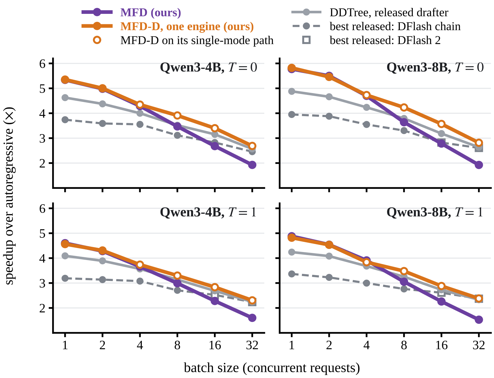
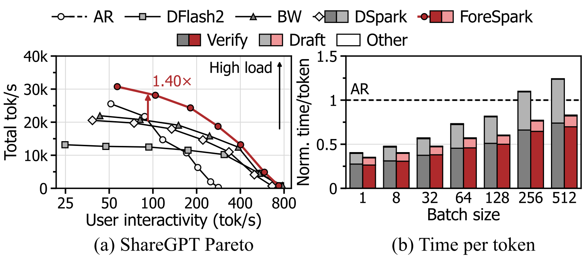

Contents · 7 sections
1The number of chimeras grows exponentially with the disagreeing positions2An input vector for "which continuation" replaces the chain rule3Training rewards only the mode that covers best4Tree building scores each prefix by the mode that fits it best5Guessing one mode fails; the target must pick among the continuations68–7.6% faster than the strongest single-mode tree on the same data, with the saved budget going to real continuations7Mainly worth it at small batch sizes, with most of the gain at forksSHARE
In speculative decoding, a small draft model guesses the next several tokens, and the large model checks them in parallel in one forward pass, so the output distribution is exactly that of token-by-token generation. Block drafters such as DFlash give a separate distribution for each upcoming position in one forward pass, and DDTree multiplies the per-position probabilities to choose the prefixes in the draft tree. That product splices several plausible continuations into sentences the target model never says: the paper measures that 27–33% of the nodes in a 64-node product tree are such spliced strings. The paper adds K input modes to the drafter, each standing for one continuation; one forward pass drafts K internally coherent blocks, which are merged into one tree for the large model to choose from, and verification stays lossless. The paper finds a budget waste in block drafters and gives the draft tree's budget back from spliced strings to real continuations. It is mainly worth it at small batch sizes: in SGLang closed-loop throughput it falls behind DDTree from batch 8 on.
Speculative decoding lets a small drafter guess the next few tokens, and the large model (the target model below) checks them in one parallel forward pass. Correct prefixes are accepted, and the output distribution is exactly that of token-by-token generation. The fastest drafters today are block drafters: DFlash reads the target's hidden states and gives a token distribution for each of the next 15 positions in one forward pass. DDTree then turns these distributions into a draft tree holding B candidate prefixes (B is the node budget). The target verifies the whole tree in one forward pass and accepts the longest match along the path it actually takes.
The hard part is deciding which prefixes go into the tree. The paper first gives an identity (Proposition 1): the expected number of accepted tokens per round equals the sum of the target's probabilities of all prefixes in the tree. So the best tree with B nodes holds the B prefixes with the highest joint probability. But a block drafter gives only one distribution per position, and it does not know which word at position 2 goes with which word at position 1. DDTree can only multiply the per-position probabilities and use the product as the prefix score.
An illustrative example shows where the product goes wrong. After "Let's break", the target has two ways to continue: A is "this down" with probability 0.6, and B is "down the" with probability 0.4. The drafter's per-position distributions are then: position 1, this 0.6 and down 0.4; position 2, down 0.6 and the 0.4. Ranked by product, the four depth-2 candidates score:
- this down: 0.6 × 0.6 = 0.36 (true probability 0.6)
- this the: 0.6 × 0.4 = 0.24 (true probability 0; the target never says this)
- down down: 0.4 × 0.6 = 0.24 (true probability 0)
- down the: 0.4 × 0.4 = 0.16 (true probability 0.4)
With a budget of 4 nodes, DDTree picks this, down, this down, and one of the two 0.24 prefixes. Because the product scores the spliced prefixes higher, the real continuation down the ranks below them and stays out of the tree. By Proposition 1, this tree accepts 0.6 + 0.4 + 0.6 + 0 = 1.6 tokens per round in expectation; with down the instead, it reaches the optimal 2.0. The paper calls a prefix like this the, stitched together from tokens of different continuations, a chimera.
There are two existing fixes. The first is the chain rule: each position conditions on the tokens already drafted before it, as autoregressive drafters do. In the example, once the first word is this, the second word must be down. The price is paying back part of the sequential drafting that one-pass block drafters remove. The second fix is to train each position's distribution to be more accurate. The paper proves this route has a ceiling: even when every position's distribution is exact, the dependence between positions still makes product ranking go wrong. In the example above the distributions are already exact, and the chimeras still rank above a real continuation.
The number of chimeras grows exponentially with the disagreeing positions
If two continuations differ in only 2 positions, a product tree must hold at least 1 extra chimera to keep both, as in the example. Lemma 1 generalizes this: to hold two continuations that differ in m positions, a product tree must also, barring ties, hold 2^(m−1) − 1 spliced prefixes. That is 7 for m = 4 and 511 for m = 10. Continuations shifted by one token, phrased differently or ordered differently disagree at almost every position after they split, so m grows quickly.
Proposition 2 does the accounting for an extreme case: two continuations with half the probability each, differing at all 15 positions, and a budget of 256 nodes. The optimal tree accepts all 15 tokens, and any product ranking at most 12. Using only the true per-position distributions, averaged over how the two continuations pair up, gives at most about 8 (log2(258) ≈ 8). This means that better-trained distributions cannot close the gap; the problem lies in ranking by a product itself.
Real models behave the same way. The figure below is the paper's real GSM8K example with Qwen3-4B as the target: DDTree's best path "this the problem step step to" jumps between continuations A and B, 9 of the tree's 15 nodes lie on spliced prefixes, and only 2 tokens are accepted. Over 628 prompts, 27–33% of the nodes in a 64-node product tree are chimeras, and the best path passes through a chimera in 61–65% of rounds.

An input vector for "which continuation" replaces the chain rule
Since the chain rule costs sequential drafting, the authors use the other classical tool: a latent variable. The latent variable answers one question, "which continuation is taken this time". Once it is known, the positions are largely independent again, and the product works. Proposition 3 measures the saving: a latent variable with K values that exactly separates K continuations differing at every position removes (D−1)·log K of the dependence, growing linearly with the block length. The key is that it needs no drafted tokens, so K drafts can be produced in the same forward pass.
The method is called Multi-Future Drafting (MFD). It adds K learned mode embeddings to the input of the DFlash drafter, each mode standing for one direction the continuation can take. To draft mode k, its embedding is added to the input of every position in the block. The K blocks run side by side in the same forward pass: they share the computation over the context, and each attends only to its own block. The added parameters are just the K embeddings plus a gate, about 23K for K = 8 and width 2560.
Back to the illustrative example, with K = 2: the intermediate output of drafting is two per-position distribution tables instead of one:
| Position 1 | Position 2 | |
|---|---|---|
| mode 1 (follows A) | this 0.95, down 0.05 | down 0.95, the 0.05 |
| mode 2 (follows B) | down 0.95, this 0.05 | the 0.95, down 0.05 |
Within each table the scores are still products, but in mode 1 this the gets only 0.95 × 0.05 ≈ 0.05, so the chimera sinks on its own. The full pipeline:
| Step | Input | Operation | Output | Training only? |
|---|---|---|---|---|
| Drafting | Context hidden states + K mode embeddings | Draft K blocks of 15 positions in one forward pass | K per-position distribution tables | No |
| Mode-selective training | The target's real continuation | Compute how much each mode covers; the best one takes most of the gradient | Modes specialize | Yes |
| Tree building | K distribution tables | Score each prefix by the mode that fits it best; keep the top B | One tree of B nodes | No |
| Verification | This tree | One target forward pass, identical to DDTree | Accepted tokens | No |
On Qwen3-4B, the extra modes add about 0.6 ms per round in eager execution and about 0.2 ms in the SGLang engine.
Training rewards only the mode that covers best
The most direct way to train is to average the same loss over the K modes. The problem is that every mode then has exactly the same objective, and training ends with K identical single-mode drafters. MFD trains winner-take-all instead: for a real continuation from the target, it first computes each mode's coverage, that is, the expected number of tokens matched consecutively from the start, computed directly from that mode's probabilities. The mode with the largest coverage gets weight 0.9, and each of the other 7 gets 0.1/7 ≈ 0.014.
Illustratively: for a continuation starting with "down the", mode 2 matches about 4 tokens and every other mode fewer than 1. Most of this step's gradient comes from mode 2's loss, pushing it toward B; the drafter network itself is shared by all modes and is updated too. The next continuation starting with "this down" mainly updates the mode that follows A. Over time each mode takes charge of one kind of continuation; this is the oracle loss of multiple-choice learning. Inside each mode the loss is D-PACE: a DFlash fine-tuning method that weights cross-entropy by how likely each position is to be reached by acceptance. The small 0.014 weight keeps every mode in use. To match the single-mode baseline's training compute per step, the baseline uses 512 draft starting points per sequence, and MFD uses 8 modes × 64 starting points.
Tree building scores each prefix by the mode that fits it best
Given K distribution tables, how is the tree built? MFD scores each prefix by the maximum of "prior × product" over the modes, then keeps the B highest scores. Timed runs use a uniform prior. In the illustrative example each mode has prior 0.5: this down scores 0.5 × 0.95 × 0.95 ≈ 0.45 under mode 1, and down the also about 0.45 under mode 2. this the scores only about 0.02 under either mode and ranks last. The 4-node tree is therefore exactly this, down, this down, down the, which is the optimal tree.
In the implementation, the K modes each run a best-first search, merged into one heap that exactly picks the top B. If two modes follow the same continuation, a prefix is popped twice, and the second time it reuses the existing node and spends no budget. With K = 1 the procedure reduces to DDTree. The maximum is used instead of the sum of the K modes' probabilities because the maximum's tree is exactly the union of the per-mode trees, which one heap computes exactly. Verification is identical to DDTree at the same budget, so decoding stays lossless.
Guessing one mode fails; the target must pick among the continuations
A natural question: since there is a gate, why not let the gate pick one mode and verify only that one? Table 3 compares four ways to use the same K = 8 drafter. The numbers are the change in the average number of tokens accepted per round (τ below) relative to single-mode D-PACE, simulated with drafters trained for a quarter epoch, at T = 0:
| Usage | Meaning | Change in τ |
|---|---|---|
| gate chain | After all modes draft, the gate picks one mode's chain before verification | −4.6% |
| oracle chain | Knowing afterwards which mode is best for each block, use its chain | +27.4% |
| gate tree (B = 64) | Spend the whole tree budget on the gate's mode | −7.3% |
| mixture tree (B = 512) | Merge all modes into one tree with the scoring of the previous section | +7.8% |
This shows that the right continuation is indeed in some mode, but it is hard to guess before verification: at K = 4 the gate picks correctly on only 38% of training blocks (chance is 25%), and at K = 32 on only 10%. Only a branching tree that leaves the choice to the target can collect part of this gain. The multi-mode drafters in the table train on twice as many draft blocks as D-PACE; with the block count matched at 512, K = 4 still gains +5.0% at B = 64.
Two more comparisons point the same way. Verifying the 8 modes' most likely chains directly (up to 120 nodes) only matches D-PACE's 64-node tree, because the chains repeat shared prefixes. Shuffling the modes at each position before building the tree drops the gain below D-PACE. The gain comes from how positions fit together within one mode.
4.8–7.6% faster than the strongest single-mode tree on the same data, with the saved budget going to real continuations
The main results are timed at batch size 1 in Hugging Face Transformers, on four Qwen targets from 4B to 27B, as five-task means. The strongest baseline is usually D-PACE + DDTree trained on the same data with the same recipe. The three-epoch MFD is 4.8–7.4% faster than it at T = 0 and 5.7–7.6% at T = 1. For Qwen3-4B at T = 0, the strongest baseline in that cell is the one-epoch D-PACE + DDTree: speedup 6.73× against 6.31× (about 6.7% faster), and τ 9.71 against 8.91. Fine-tuned on the full 1.42M prompts, the lead grows to 6.2–12.2%, with a top speedup of 7.78× on Qwen3.5-4B. The baseline and MFD use the same data and training recipe, which means the extra speed comes from the modes and the mixture tree.
The statistics on where the budget goes are more direct. On Qwen3-4B, MFD trees cover 8.3% (B = 64) and 10.3% (B = 256) more probability than D-PACE trees. Counted as drafted tokens accepted per round (this analysis uses 24 prompts per task at T = 1, a different setup from the main results), the 64-node MFD tree reaches 6.78 and the 256-node D-PACE tree 6.87, so the two are close. The gain is larger at forks (a runner-up token of at least 10%): MFD accepts 10–12% more tokens there and only 2–4% more elsewhere. But at equal difficulty, the gain is about as large where the target is confident. This shows the gain tracks where a single-mode tree stops early, and those places are mostly forks. Mixture trees do not eliminate chimeras: they still make up 22–24% of nodes at 64 nodes, but forks add 54–57% fewer of them.
Against concurrent work, trained on the same prompts, MFD is 9–16% faster than DARTree on Qwen3-4B/8B. DARTree corrects the draft depth by depth based on drafted tokens; at the same 64 nodes it accepts more tokens per round (9.97 against 9.67 on Qwen3-4B at T = 0), but building its tree takes 2.6–2.7 ms per round against about 0.35 ms for MFD. At its best budget, MFD also accepts slightly more per round (10.49 against 9.97 on Qwen3-4B, 10.18 against 10.09 on Qwen3-8B), so it is faster overall. In SGLang 0.5.22 at batch size 1, MFD is 45–46% faster than the fastest released drafter (the DFlash chain) and 7–9% faster than D-PACE in the same engine on the same data.
Mainly worth it at small batch sizes, with most of the gain at forks
In the illustrative example, if the context is already "Let's break this", the next word is almost certainly down, which continuation is taken is largely settled, and the K extra drafts are mostly cost. The paper's value of hedging (Eq. 3) captures exactly this: it is 0 when the information the drafter sees is enough to determine which mode wins.
As the batch grows, this cost starts to outweigh the gain, because drafting K blocks costs more as the batch grows while the acceptance length does not change: at batch 32, an MFD draft round takes 18.6 ms against 3.9 ms for a single mode. In SGLang closed-loop throughput, MFD is 10–18% faster than the released options at batch 1–2 and 3–11% faster at batch 4, and falls behind DDTree from batch 8. The authors' MFD-D trains an extra default path without modes and switches to it from 3 concurrent requests. It is the fastest at every batch size, but from 3 requests on it no longer uses the mixture.

Two more boundaries. Adding 8 modes to the Domino drafter, which already conditions on drafted tokens, changes τ by −1.3% at B = 64 and +1.3% at B = 128. This shows that once the chain rule has restored how positions fit together, the latent variable has little left to do; on the drafter the authors tested, combining the two adds little. Small budgets do not always win either: on the two hybrid Gated-DeltaNet targets at B = 16 and T = 0, MFD is slightly below D-PACE.
So the paper's value lies in getting the accounting right: draft-tree budget should be allocated by the probability of whole prefixes, and per-position products hand it to chimeras. For single-request, low-latency inference, adding a few input vectors that stand for directions of the continuation lets a block drafter return that budget to real continuations in the same forward pass.
How did this read for you?
Hoot made a note. Thanks for the feedback.
One tap, no sign-in; tap again to undo. Only anonymous counts are kept, never who you are.
Related papersMore from Paper Daily

Infra · 2026-11-12ForeSpark: Joint Draft and Verification Budget Scheduling for Parallel Speculative DecodingA parallel draft model writes a whole block of draft tokens in one forward pass. Current systems write the full block first, then pick the most promising few for the target model to verify. The authors find this wasteful under high load: drafting takes up to 40% of each step, and most of what is drafted is thrown away without ever being verified. The difficulty is that a parallel draft model must… Infra · 2026-11-05HybridSpec: Throughput-Aware Speculative Decoding for Hybrid GDN-MoE ModelsWhen doing speculative decoding on models that mix Gated DeltaNet (GDN, a linear-attention layer with a recurrent state) and MoE layers, how many draft tokens to verify per round cannot be copied from dense-model settings. On one hybrid Qwen model, raising the tokens verified per round from 4 to 16 makes verification 71% slower. Each round, HybridSpec scores every candidate length: the tokens it…
Infra · 2026-11-05HybridSpec: Throughput-Aware Speculative Decoding for Hybrid GDN-MoE ModelsWhen doing speculative decoding on models that mix Gated DeltaNet (GDN, a linear-attention layer with a recurrent state) and MoE layers, how many draft tokens to verify per round cannot be copied from dense-model settings. On one hybrid Qwen model, raising the tokens verified per round from 4 to 16 makes verification 71% slower. Each round, HybridSpec scores every candidate length: the tokens it… Infra · 2026-11-02TableTune: Measured, Self-Correcting Draft-Length Tables for Dynamic Speculative DecodingThe table in vLLM's documentation that sets how many tokens speculative decoding guesses per step at each batch size can visibly cut throughput on a different GPU or model. This paper gives a tool that measures the best table in minutes and keeps correcting it as traffic changes. Speculation only pays while the GPU has spare compute, so the more requests share a batch, the fewer tokens each step…
Infra · 2026-11-02TableTune: Measured, Self-Correcting Draft-Length Tables for Dynamic Speculative DecodingThe table in vLLM's documentation that sets how many tokens speculative decoding guesses per step at each batch size can visibly cut throughput on a different GPU or model. This paper gives a tool that measures the best table in minutes and keeps correcting it as traffic changes. Speculation only pays while the GPU has spare compute, so the more requests share a batch, the fewer tokens each step… Infra · 2026-10-27NgramRL: Accelerating RL Post-Training for Structured Generation via Rollout-Aware N-gram Speculative DecodingIn LLM reinforcement learning post-training, generating answers often takes over 70% of training time. This paper notices that the answers a prompt received in recent training rounds closely resemble what it will produce now, so they make good drafts. NgramRL builds an n-gram draft table for each prompt from only its own recent answers. During generation, the last few tokens of the current answer…
Infra · 2026-10-27NgramRL: Accelerating RL Post-Training for Structured Generation via Rollout-Aware N-gram Speculative DecodingIn LLM reinforcement learning post-training, generating answers often takes over 70% of training time. This paper notices that the answers a prompt received in recent training rounds closely resemble what it will produce now, so they make good drafts. NgramRL builds an n-gram draft table for each prompt from only its own recent answers. During generation, the last few tokens of the current answer… Infra · 2026-10-23RCSD: Reinforcement and Continual Learning for Domain-Specific Speculative DecodingHisense's RCSD continues training a speculative-decoding draft model that was distilled with HASS, using DPO or GRPO: sequences from the target alone are "good," sequences alternating target and draft are "bad," and the GRPO variant scores by acceptance rate. On Qwen3-1.7B and Llama-3.1-8B, acceptance length exceeds HASS on four datasets and draft steps 3–6—for example Qwen3-1.7B on GSM8K at step…
Infra · 2026-10-23RCSD: Reinforcement and Continual Learning for Domain-Specific Speculative DecodingHisense's RCSD continues training a speculative-decoding draft model that was distilled with HASS, using DPO or GRPO: sequences from the target alone are "good," sequences alternating target and draft are "bad," and the GRPO variant scores by acceptance rate. On Qwen3-1.7B and Llama-3.1-8B, acceptance length exceeds HASS on four datasets and draft steps 3–6—for example Qwen3-1.7B on GSM8K at step… Infra · 2026-11-12One-Sided Expert-Parallel All-to-All for Mixture-of-Experts Inference over NVLinkIn MoE inference every layer runs two all-to-all exchanges: first it sends tokens to the GPUs that hold their experts, then it collects the experts' outputs back. During inference each GPU handles only a few tokens at a time. The time then goes to fixed costs such as GPUs waiting on and synchronizing with each other, not to moving data. The data is small enough to cross NVLink almost instantly, y…
Infra · 2026-11-12One-Sided Expert-Parallel All-to-All for Mixture-of-Experts Inference over NVLinkIn MoE inference every layer runs two all-to-all exchanges: first it sends tokens to the GPUs that hold their experts, then it collects the experts' outputs back. During inference each GPU handles only a few tokens at a time. The time then goes to fixed costs such as GPUs waiting on and synchronizing with each other, not to moving data. The data is small enough to cross NVLink almost instantly, y… Infra · 2026-11-02Nemotron 3.5 Super and Lightning: Open, Efficient Mixture-of-Experts Hybrid Mamba-Transformer Models for Agentic AIOpen models built for agents often have to choose between capability and inference cost. NVIDIA's Nemotron 3.5 Super optimizes both. It is a hybrid Mamba-Transformer mixture-of-experts model that activates only about a tenth of its parameters per token, and it scores 51.78% on SWE-bench Pro, ahead of the previous-generation Ultra with several times more active parameters. The deployment design ma…
Infra · 2026-11-02Nemotron 3.5 Super and Lightning: Open, Efficient Mixture-of-Experts Hybrid Mamba-Transformer Models for Agentic AIOpen models built for agents often have to choose between capability and inference cost. NVIDIA's Nemotron 3.5 Super optimizes both. It is a hybrid Mamba-Transformer mixture-of-experts model that activates only about a tenth of its parameters per token, and it scores 51.78% on SWE-bench Pro, ahead of the previous-generation Ultra with several times more active parameters. The deployment design ma…
Discussion
Add experiment details, reproduction notes or a different take. Requires a GitHub sign-in.
Loading the discussion…